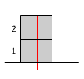

| Sentido de la fuerza de rozamiento Supongamos que no hubiera rozamiento entre los bloques |
|
| |
 |
| Al moverse el bloque 2 hacia la derecha, el bloque 1 no será arrastrado y seguirá en reposo respecto al suelo (Observa las marcas rojas) El bloque 2 se ha movido hacia la derecha respecto al bloque 1. Si hubiera rozamiento este se opondría a dicho movimiento, la fuerza de rozamiento sobre el bloque 2, F21, irá hacia la izquierda. Visto de otra forma, el bloque 1 se ha movido hacia la izquierda respecto al bloque 2. Si hubiera rozamiento este se opondría a dicho movimiento, la fuerza de rozamiento sobre el bloque 1, F12, irá hacia la derecha. |
|